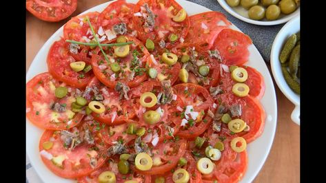

140 ideas de Recetas de Fast Food (Comida rápida) en 2021 | comida, recetas, cocina vital

Recetas de Fast Food (Comida rápida)
Collection by Cocina Vital • Last updated 2 weeks ago
147 Pins • 1.05m FollowersRecetas para preparar tu comida rápida favorita pero hecha en casa. Ideales para una reunión o cualquier celebración con los amigos.
Chile Cuaresmeño Snack Zucchini Vegetables Food 4 Ingredients Vegetarian Recipes Essen Vegetable RecipesChiles cuaresmeños rellenos de queso ¡Con 4 ingredientes!
· 1 review ·Y para las reuniones del fin de semana, nada mejor que una botana rica, fácil de hacer y con un toque de picante ¡Deliciosos chiles jalapeños rellenos de queso! The post Chiles cuaresmeños rellenos de queso ¡Con 4 ingredientes! appeared first on Cocina Vital - ¿Qué cocinar hoy?.
9 100Receta de pollo frito estilo KFC
4 deliciosos y rendidores guisados para vender y ganar dinero fácil
!Prepara estos platillos caseros para vender y gana mucho dinero desde la comodidad de tu hogar! The post 4 deliciosos y rendidores guisados para vender y ganar dinero fácil appeared first on Cocina Vital - ¿Qué cocinar hoy?.
Snack Ethnic Recipes Food Deep Fryer Wing Recipes Cooking Recipes Lunches Dinners Apple VinegarReceta de alitas con salsa de mango y habanero en air fryer
· 1 review ·Prepara estas ricas alitas en tu freidora de aire o air fryer y agrégale sabor con un salsa de mango super picosa ¡Deliciosas, jugosas y rápidas!
Snack Chana Masala Food And Drink Book Ethnic Recipes Cinnamon Apple Chips Cake Birthday Dessert Food SaladsReceta de chips de manzana con canela en freidora de aire
· 1 review ·Esta receta de chips de manzana crujientes están deliciosas y se hacen en freidora de aire o air fryer ¡Super rápido, exquisitas y nutritivas!
Catsup Snack Ethnic Recipes Food Log Projects Potato Recipes Potatoes Cooking Recipes MealsReceta de papas gajo con perejil en air fryer
· 1 review ·Mira esta rica receta de Patatas gajo o papas gajo en Air fryer ¡Estarán listas en menos de 30 minutos y las amrán en casa por su delicioso sabor!
Spaghetti Ethnic Recipes Blog Home Food Menu Cook Recipes Blogging NoodleMenú de Comida Corrida ¡Fácil, económico y delicioso!
Si extrañas la comida de la fondita de la esquina de la oficina ahora que estás en home office, te presentamos un menú de comida corrida para hacer en casa. The post Menú de Comida Corrida ¡Fácil, económico y delicioso! appeared first on Cocina Vital - ¿Qué cocinar hoy?.
Baked Potato Potatoes Baking Ethnic Recipes Food Vestidos Easy Food Recipes Tin Cans HealthyCómo preparar atún en lata ¡10 recetas fáciles y rendidoras!
¡Si quieres cocinar saludable y económico, prepara cualquiera de estas fáciles recetas con atún en lata!
Ideas Cold Dishcloth Dessert Recipes Calorie Counting Deep Fryer ThoughtsReceta de Papas fritas en air fryer
· 1 review ·Prueba esta forma de preparar este clásico del fast food. Con esta receta de papas fritas en air fryer podrás comerlas sin el aceite de la freidora común.
Mole Frankfurt Ethnic Recipes Yummy Food Food And Wine Cook Create Crafts With Jars Mole Sauce7 diferentes recetas de hot dogs para celebrar su día
Esta deliciosa comida, creada a mediados de 1800, a partir de las tradicionales salchichas estilo Frankfurt, se destaca por su sencillez y sabor. Y para celebrar su día te presentamos estas recetas de hot dogs para experimentar y hacer que este el Día del Hot Dog sea mágico, al crear uno de tus favoritos en compañía de los que más quieres.
1:18 Snack Recipes Healthy Recipes Healthy Food No Cook Meals Food Videos Chips Yummy Food Beef ChickenReceta de Papas fritas en air fryer
· 1 review ·Prueba esta forma de preparar este clásico del fast food. Con esta receta de papas fritas en air fryer podrás comerlas sin el aceite de la freidora común.
Snack Peanut Butter Cold Dishcloth Potato Recipes Easy Recipes Deep Fryer Bebe Nut ButterPapas fritas en air fryer
· 1 review ·Prueba esta forma de preparar este clásico del fast food. Con esta receta de papas fritas en air fryer podrás comerlas sin el aceite de la freidora común. The post Papas fritas en air fryer appeared first on Cocina Vital - ¿Qué cocinar hoy?.
Chicken Meat Food Home Easy Recipes Vegetables Meals Essen Yemek10 recetas de comida china para preparar fácil y rápido
¡Yumi, yumi! Lleva a tu mesa la comida oriental que es fácil y deliciosas. La comida china siempre ha sido una opción rápida para comer en casa y ahora ya no la compres y mejor aprende cómo hacerla. Por ello aquí te enlistamos 10 recetas de comida china con pollo, con carne o verduras para preparar fácil y rápido.
Super Bowl Carne Chicken Meat Kitchen Recipes Food Frases Homemade Food7 recetas de alitas para botanear en el Super Bowl
Si tienes una reunión con tus amigos o simplemente antojo de alitas, aquí te traemos toda una lista de opciones para que elijas la que más te guste. Prepara estos antojos para festejar el Super Bowl
11 Kitchen Recipes Gourmet Recipes Cooking Recipes My Favorite Food Favorite Recipes Queso Manchego Cheese Appetizers Tasty Yummy Food 845Dedos de queso manchego empanizados | Receta paso a paso
Sandwiches Enchiladas Cheesecakes Food Vegetarian Ranch Dressing Recipe Salad Chicken Mexican Food Recipes Baking
Wrap 2×1: Jamón con queso y Vegetariano
· 1 review ·Descubre nuestra receta de wrap 2x1 y llena de sabor cualquier momento de tu día. Elige entre jamón con queso o una vegetariana. Son prácticas y deliciosas. The post Wrap 2×1: Jamón con queso y Vegetariano appeared first on Cocina Vital - ¿Qué cocinar hoy?.
Privacy